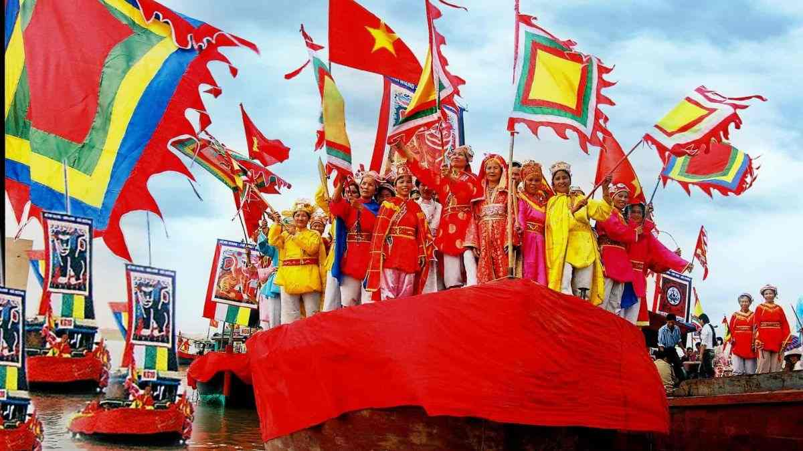
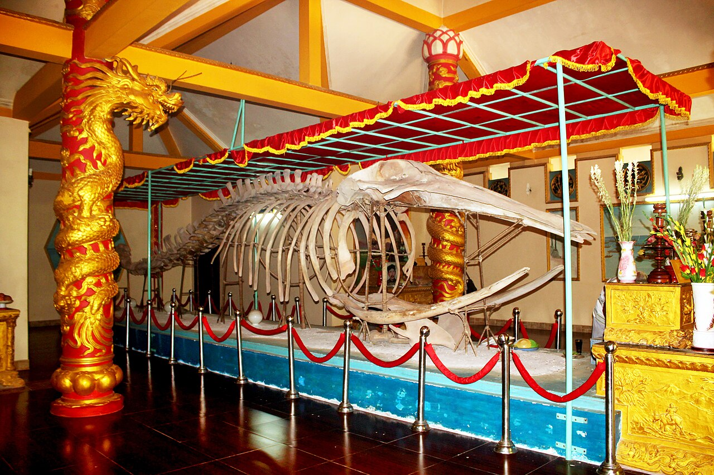

Nghinh Ong Festival in Vietnam
About
Nghinh Ong Festival, also known as the Whale Worship Festival, is a traditional festival celebrated by many coastal communities in Vietnam. The festival is held to honor whales and pray for safety, good weather, and successful fishing trips.
Whales are traditionally believed to protect fishermen from storms and dangers at sea. Therefore, the festival is an important part of the spiritual and cultural life of many Vietnamese fishing communities.


Activities
Main Activities
- Processions and parades featuring traditional music and dance.
- Offerings and rituals to honor the whales.
- Community feasts and celebrations.
- Fishing competitions and exhibitions.
Other Activities
- Traditional worship ceremonies
- Boat processions
- Traditional music and performances
- Community activities
- Local cultural celebrations
Meaning
The Nghinh Ong Festival is not only a religious event but also an important cultural tradition. It gives local people an opportunity to express their respect and gratitude to whales.
The festival also brings the community together and helps preserve traditional customs, beliefs, music, and local culture. It is also an opportunity to introduce Vietnamese coastal culture to visitors.